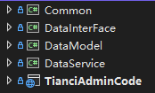
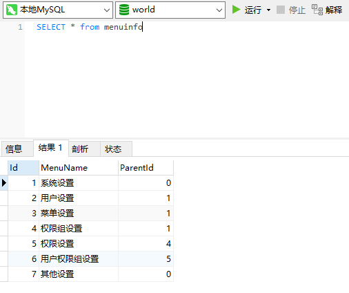

# 这两天从 FreeSql 转 SqlSugar，记录一些日常
# 首先本地装了一个 8.0.28 最新版本的 MySQL
# 然后项目中集成 MySQL 和 SqlSugar

# 项目分层我是在放实体的 DataModel 层添加引用
| <PackageReference Include="MySql.Data" Version="8.0.28" /> |
| <PackageReference Include="SqlSugarCore" Version="5.0.5.4" /> |
# 然后处理代码逻辑是在 DataService 层，也就是接口实现，所以在这层写上下文类
| using SqlSugar; |
| |
| namespace DataService |
| { |
| |
| |
| |
| public class DbContext |
| { |
| public static string ConnectionString { get; set; } |
| |
| public static SqlSugarClient GetInstance() |
| { |
| var db = new SqlSugarClient(new ConnectionConfig |
| { |
| ConnectionString = ConnectionString, |
| DbType = DbType.MySql, |
| IsAutoCloseConnection = true, |
| InitKeyType = InitKeyType.Attribute |
| }); |
| return db; |
| } |
| } |
| } |
| |
| DataService.DbContext.ConnectionString = Configuration.GetConnectionString("MySQLConnection"); |
# appsettings.json 添加本地数据库连接字符串
| "ConnectionStrings": { |
| "MySQLConnection": "server=127.0.0.1;uid=root;pwd=123456;port=3306;database=world;SslMode=None" |
| } |
# 今天本打算写一个树形结构的菜单层级处理，看到 SqlSugar 官方文档有自带的方法 ToTree
# 简单使用一下，以下是数据库结构

# 实体类数据代码
| using System.Collections.Generic; |
| using SqlSugar; |
| |
| namespace DataModel.Table |
| { |
| |
| |
| |
| [SugarTable("menuinfo")] |
| public partial class MenuInfo |
| { |
| |
| |
| |
| [SugarColumn(IsPrimaryKey = true, IsIdentity = true)] |
| public int Id { get; set; } |
| |
| |
| |
| |
| public string MenuName { get; set; } |
| |
| |
| |
| |
| public int? ParentId { get; set; } |
| |
| |
| |
| |
| [SqlSugar.SugarColumn(IsIgnore = true)] |
| public List<MenuInfo> Child { get; set; } |
| } |
| } |
# 示例代码
| using (var db = DbContext.GetInstance()) |
| { |
| |
| db.Queryable<MenuInfo>().ToJson(); |
| |
| Stopwatch sw = new Stopwatch(); |
| sw.Start(); |
| var tree = db.Queryable<MenuInfo>().ToTree(s => s.Child, s => s.ParentId, 0); |
| string json = JsonConvert.SerializeObject(tree); |
| sw.Stop(); |
| |
| Stopwatch sw2 = new Stopwatch(); |
| sw2.Start(); |
| var list = db.Queryable<MenuInfo>().ToList(); |
| list.ForEach(s => s.Child = list.Where(x => x.ParentId == s.Id).ToList()); |
| var tree2 = list.Count > 0 ? list.Where(s => s.ParentId == list.OrderBy(s => s.ParentId).ToList().FirstOrDefault().ParentId).ToList() : null; |
| string json2 = JsonConvert.SerializeObject(tree2); |
| sw2.Stop(); |
| _logger.LogInformation("SqlSugar耗时：{0}ms，数据：{1}", sw.ElapsedTicks / (decimal)Stopwatch.Frequency * 1000, json); |
| _logger.LogInformation("Linq Foreach耗时：{0}ms，数据：{1}", sw2.ElapsedTicks / (decimal)Stopwatch.Frequency * 1000, json2); |
| |
| } |
# 运行五次并打印日志
SqlSugar耗时：14.0168000ms
Linq Foreach耗时：7.8033000ms
SqlSugar耗时：1.6285000ms
Linq Foreach耗时：1.0115000ms
SqlSugar耗时：0.8813000ms
Linq Foreach耗时：0.7391000ms
SqlSugar耗时：4.4206000ms
Linq Foreach耗时：4.1635000ms
SqlSugar耗时：1.015000ms
Linq Foreach耗时：0.8329000ms
# 结论：SqlSugar 这个 ToTree 方法处理树形结构很方便，但是实际性能 Foreach 要好一丢丢